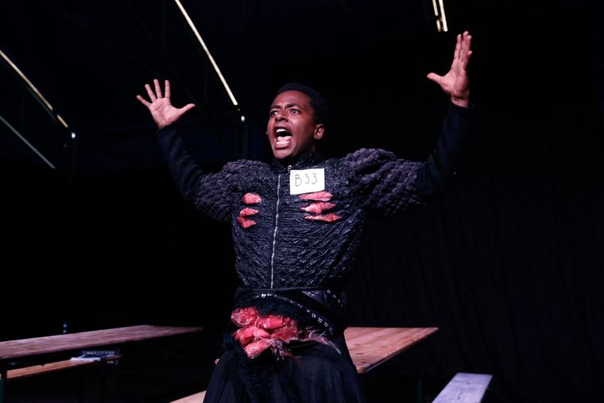
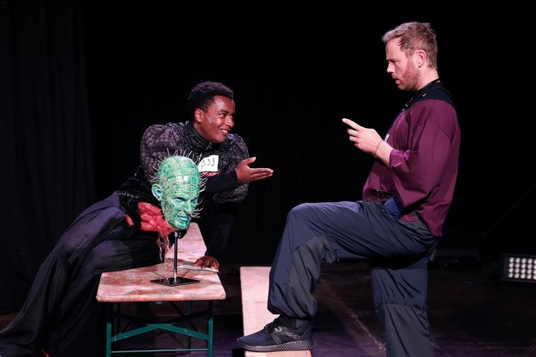
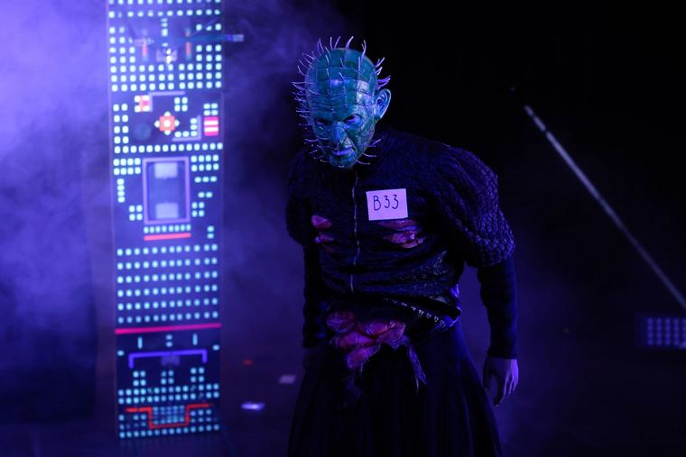
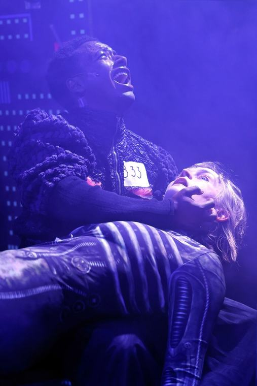
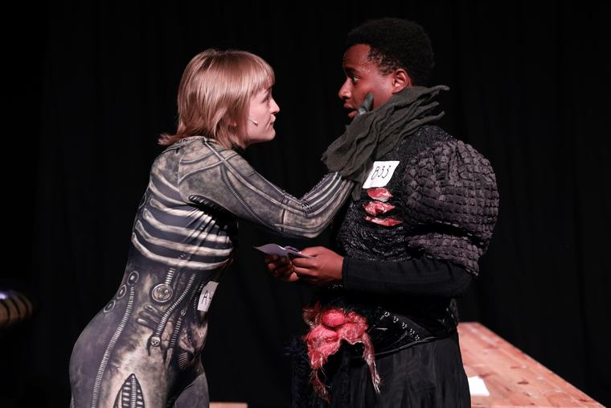
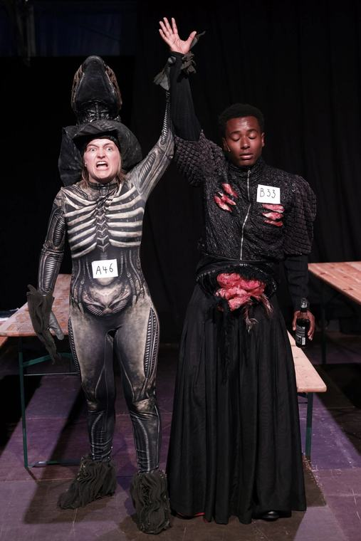
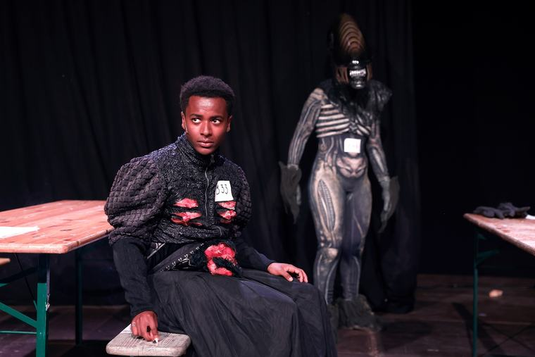
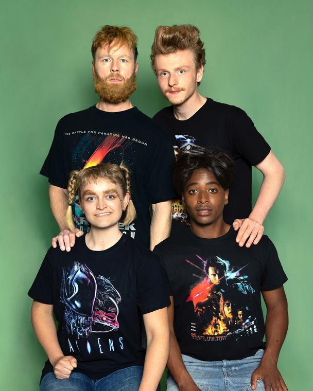

Revenge of the Extras

Научно-фантастическая сатира о тех, кто никогда не оказывается в начале вызывного листа. На съёмках фантастического фильма двое ворчливых статистов захватывают главную сцену — не ради морального реванша, а чтобы их затянуло в абсурдное зрелище, где даже революция стала перформансом. С мигающими лазерами и капающей кровью пришельцев.
Летний спектакль Het Zuidelijk Toneel, шедший на фестивале De Parade в Роттердаме, Гааге, Амстердаме и Утрехте.
“Een vrolijke verpakking met hoge amusementswaarde.”
“Een echte Parade-voorstelling met actie, humor en visuele effecten.”
“Er valt veel te genieten van deze satire.”

Создатели
- текст и режиссура
- Koen van Seuren
- в ролях
- Emma Vermeulen, Noah de Nooij, Teun Donders
- музыка
- Ton van der Meer
- костюмы
- Ilse Vermeulen
- консультант по тексту
- David Westera
- драматургический консультант
- Joachim Robbrecht
- продюсирование
- Het Zuidelijk Toneel
Показы
- 20 июня 2025 премьера, De Parade Rotterdam
- июля–авг. 2025 De Parade Den Haag, Amsterdam, Utrecht







фото: Sofie Knijff / Het Zuidelijk Toneel